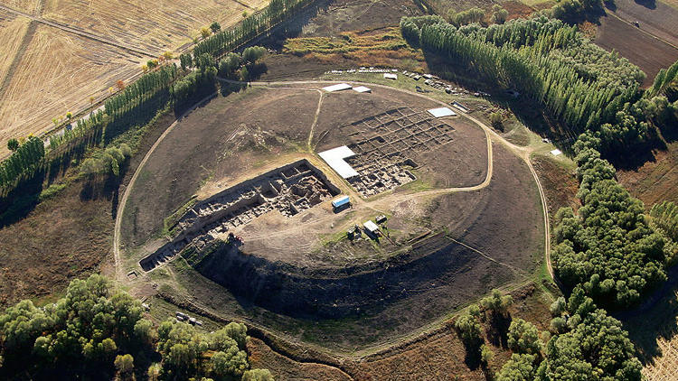
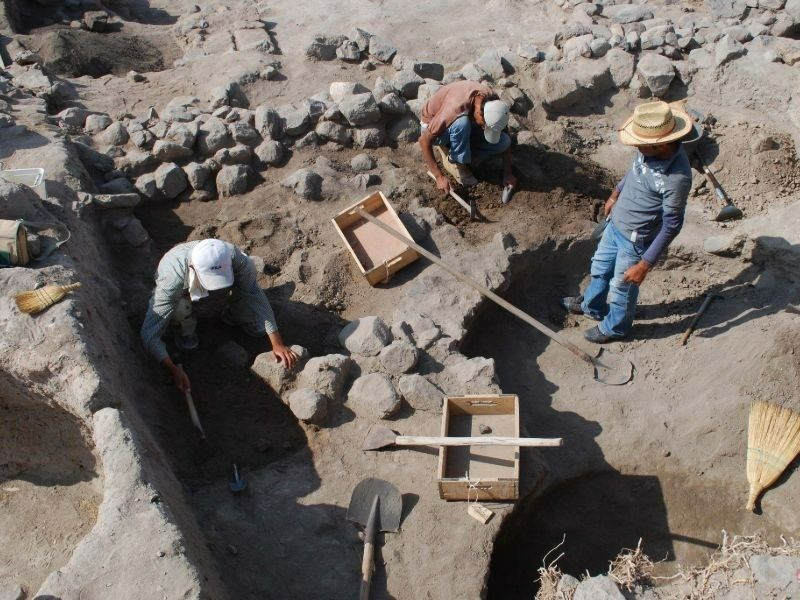

Tarihin İzinde Kaman
Binlerce yıllık medeniyetin katman katman yükseldiği topraklar.
Kronolojik Geçmiş
Kaman toprakları, yapılan kazılardan elde edilen verilere göre şu dönemlere ev sahipliği yapmıştır:
🛡️ Erken Tunç Çağı: Bölgedeki ilk yerleşik izler.
🏛️ Hitit İmparatorluğu Dönemi: Kaman'ın stratejik bir kale olarak kullanımı.
⚔️ Frig ve Pers Hakimiyeti: Kültürel geçiş dönemi.
🕌 Selçuklu ve Osmanlı: Türk-İslam mimarisinin yerleşmesi.
Kalehöyük Kazıları
Kaman Kalehöyük, 1986 yılından bu yana Japon Anadolu Arkeoloji Enstitüsü tarafından titizlikle incelenmektedir. Bu kazılar, bölgenin ticaret yolları üzerinde stratejik bir merkez olduğunu kanıtlamıştır.


Kazılarda çıkarılan eserler, Kaman Kalehöyük Arkeoloji Müzesi'nde sergilenmekte olup dünya çapında ilgi görmektedir.